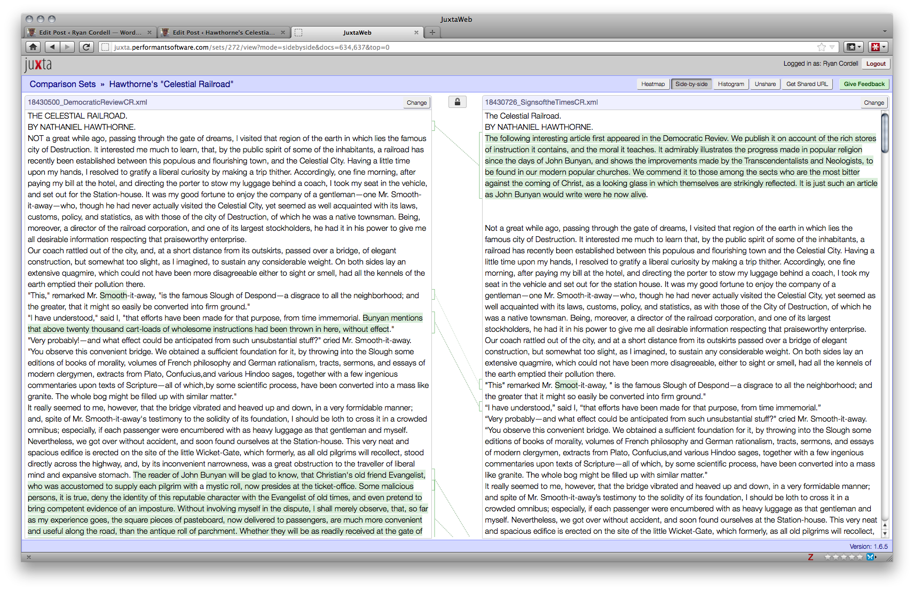
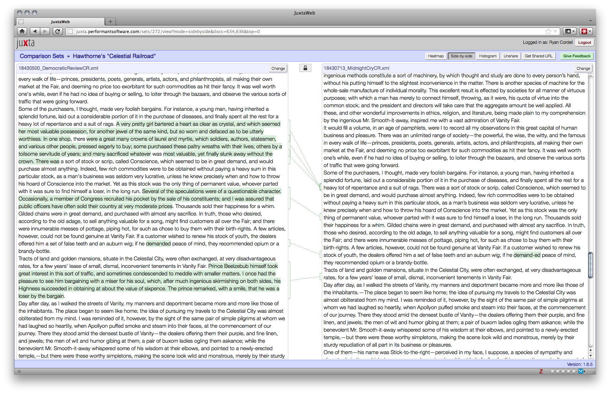
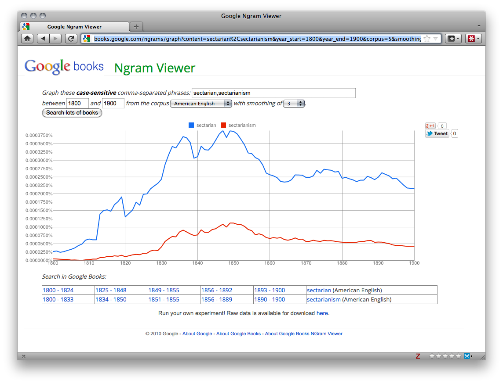
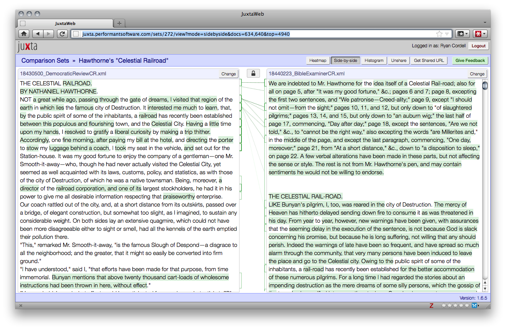
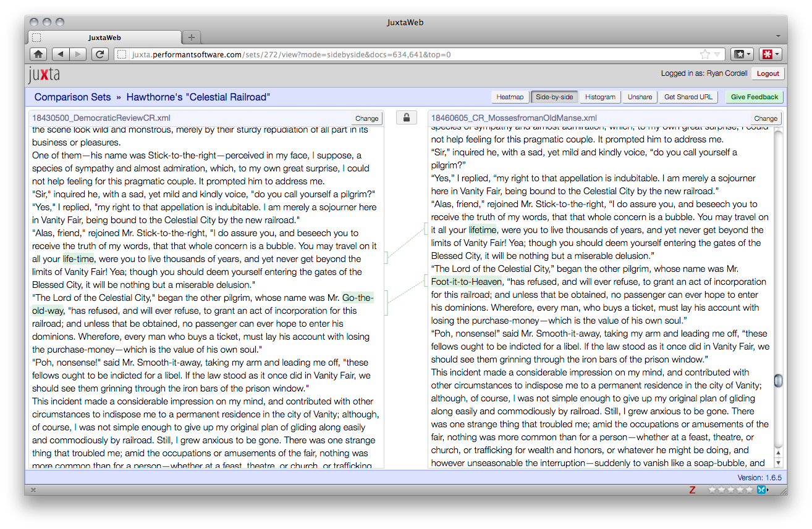

1. Introduction
In 1847, editor Rufus Griswold published an extensive anthology of American prose,
The Prose Writers of America, a follow-up to his popular 1842 anthology of American poetry,
The Poets and Poetry of America. In both of these works, Griswold collects and introduces the works of more than seventy authors he believes will define
a National Literature that shall fulfil (sic) our [the United States’] promise to mankind [[undefined griswold1847]]. In
Prose Writers Griswold calls Nathaniel Hawthorne’s writing
superior to all else of a similar description in the English language, while in a shorter preface to Hawthorne’s contributions Griswold ranks him
among the first of the first order of our writers…not excelled in the literature of the present day or of the English language [[undefined griswold1847]]. Given the ambitious aims of his anthology, this is high praise indeed. However, Meredith McGill calls Griswold’s praise of Hawthorne
striking because
Griswold’s selections are all what we would consider minor fiction [50]. Griswold ignores the stories that modern readers favor, such as
Young Goodman Brown hawthorne1835,
The Minister’s Black Veil [43], or
Rappaccini’s Daughter [44]. Though these stories were available to him, Griswold instead reprints four Hawthorne stories that modern literary critics, teachers, and anthology editors mostly ignore:
A Rill from the Town Pump, David Swan — A Fantasy, Spring, and
The Celestial Railroad. The mystery of Griswold’s selections, however, can now be at least partially explained due to the extensive record of texts and paratexts available in digital archives of nineteenth-century newspapers, periodicals, and books. Working with such archives — either through basic search or more complex text-mining techniques — can enable scholars to assemble textual histories more quickly and comprehensively than traditional archival research allows. More importantly, these textual histories can differ in character from traditional bibliographies by including primary literary texts, reprints, and also the paratexts that introduced, extended, amended, or critiqued them. In search results from digital archives, paratexts cluster with their parent texts, foregrounding the cultural conversations that shaped how readers encountered and interpreted literary works.
[Simply finding paratexts not directly appended to primary texts within print archives can be a matter of luck. Brief references or allusions to other works within the tight columns of a nineteenth-century newspaper are often not apparent to even the well-trained scholarly eye. If those references or allusions include key terms from the original text, however, the digital archive may well surface them, enriching our understanding of both the original text and its cultural history.] In his work on twentieth- and twenty-first-century fiction, Ed Finn calls these conversations
the social lives of books. Finn mines online reviews and recommendations of David Foster Wallace from sites such as Amazon to find
traces of popular reading choices which can
constitute a fresh perspective on elusive audience reactions to literature, one that reveals distinct networks of conversation that are transforming the relationships between writers and their readers
[21]. Digital archives of nineteenth-century texts expose similar ‘literary networks’
Note: Tanya Clement also suggests the term ‘social text networks’ in the
Journal of the Text Encoding Initiative [13]. In this article, I will use ‘literary networks,’ ‘textual networks,’ and ‘social textual networks’ as rough synonyms to name these sets of interconnected texts and paratexts.
around short stories, poems, essays, and books, foregrounding questions of reception and cultural impact that traditional bibliographies can obscure.
Digging for one of Griswold’s Prose Writers selections, Hawthorne’s The Celestial Railroad, in a range of digital archives, [For a list of digital archives that have been invaluable to this study, see Appendix 1] I have uncovered an extensive network of reprinting, reauthorship, and reference that can help explain Griswold’s selection of The Celestial Railroad for Prose Writers in 1847 and illuminates the importance of digital methodologies for literary study. By the time of Griswold’s publication, The Celestial Railroad had appeared in newspapers and magazines across the country and made Hawthorne’s reputation for many readers. Griswold’s was only one in a series of reprintings that began days after the tale first appeared in the May 1843 issue of the United States Magazine and Democratic Review. The Celestial Railroad was not a minor work, but rather a central text in the nineteenth-century evangelical canon, popular for its doctrinal orthodoxy and pithy moral instruction — both characteristics modern scholars rarely associate with Hawthorne, but which were central to his early reception in contemporary religious circles. [ While The Celestial Railroad was published in non-evangelical religious periodicals, the vast majority of reprintings appeared in newspapers and magazines run by evangelical denominations: e.g. Baptist, Methodist, Adventist. My discussion in this article, then, will focus on evangelical responses to the story, though there will be points of intersection between evangelical print culture, the larger world of religious print culture, and the even larger world of popular print culture that was, in the early nineteenth century, often tacitly evangelical in outlook.] Indeed, the religious editors and readers — a particular social literary network — that embraced and shared Hawthorne’s early work helped shape readers’ reception of his later novels.
The Celestial Railroad is a satirical re-imagination of John Bunyan’s
Pilgrim’s Progress in light of technological and theological ‘progress.’ The tale satirizes the easy, modern Christianity of the nineteenth century. Modern critics have mostly ignored this allegory as a quirky story unrepresentative of Hawthorne’s oeuvre. However, the larger cultural history of
The Celestial Railroad — the social life of the tale — has been obscured to scholars until recently. The most thorough Hawthorne bibliography, C. E. Frazer Clark’s
Nathaniel Hawthorne: A Descriptive Bibliography, lists 22 reprintings of the story in pamphlets, magazines, and newspapers through the nineteenth century
[12]. Referencing Clark, Meredith McGill notes that
a comprehensive list of the reprinting of Hawthorne’s tales, would require
a bibliographic feat which is as yet impossible due to the inadequately indexed state of nineteenth-century periodicals [50]. While a
complete bibliography of any story remains out of reach for the reason McGill names, recent projects to digitize nineteenth-century periodicals provide scholars with tools unavailable when Clark compiled his work.
By mining a range of digital archives and non-digitized newspapers that digital editions referenced, I’ve uncovered more than 47 reprints of The Celestial Railroad during the nineteenth century, and several in the early decades of the twentieth — more than double the printings Clark lists in his bibliography. [ I’m currently working on a digital edition of The Celestial Railroad that will allow scholars to compare versions of the text and see the editorial changes I discuss here. My current bibliography for periodical reprintings of The Celestial Railroad is available online [[undefined cordell2012a]] and in Appendix 1. A basic, TEI-encoded version of the original, Democratic Review edition of the story can be found online at Juxta Commons. See [29].] I’ve also found several books and stories inspired by The Celestial Railroad and nearly 100 direct references to the characters, settings, and themes of Hawthorne’s tale in contemporary articles and books. These paratexts have proved particularly valuable, revealing a number of new insights about Hawthorne’s early career and his relationship to the popular press. In particular, this research has pointed toward a new understanding of Hawthorne’s reception by contemporary religious readers.
In this article I will examine the editorial changes, introductions, and glosses that recast the message of
The Celestial Railroad for different denominational audiences. I will argue that the religious press valued the story for its antisectarian moral and, simultaneously, as a shot across the bow of competing sects. Finally, by examining
The Celestial Railroad’s history of reprinting and revision in the religious press, I hope to briefly suggest a new reading of Hawthorne’s famous frustration with
the pamphlet and piratical system that he worried, in a letter to Horatio Bridge, forced him
to work hard for small gains as a short story writer
[26]. I hope to show that his feeling of being
taken possession of so unceremoniously, as his wife Sophia claimed in a letter to Louisa Hawthorne
[26], may have been grounded in disaffection with the sectarian squabbling that both motivated and sustained the tale’s life in the religious print market. Indeed, this disaffection may have prompted the one substantial edit Hawthorne made to the story between its initial magazine publication (1843) and its appearance in Hawthorne’s short-story collection,
Mosses from an Old Manse (1846)
.
2. II. Implications of The Celestial Railroad for Digital Literary Scholarship
Alongside my arguments locating Hawthorne in the evangelical canon, I will discuss how digital archives of nineteenth-century texts enabled my discoveries about The Celestial Railroad and how digital interpretive tools helped me make better sense of the story’s enlarged bibliography. I hope by this discussion to suggest how these new technologies can inform future work in bibliography, periodical studies, and American literary history. As more of our cultural legacy is digitized, through thematic research collections and larger archives such as Google Books or HathiTrust, newly apparent historical and textual narratives promise to multiply exponentially. Not only will new witnesses of stories, poems, and essays surface, but so to will literary networks of reference, critique, and allusion that previously could have only been discovered through chance encounter or laborious scrutiny. The rewards of intensive, traditional bibliographic research may have seemed distant and speculative — a minute return for much labor. Mass digitization promises to reduce the time required for such research while allowing scholars to move between different scales of analysis, weighing the conclusions suggested by individual texts against those drawn through quantitative analysis of larger collections and archives — and, conversely, weighing conclusions drawn through distant analysis of archives against the telling details of individual texts. Rather than ‘close’ or ‘distant’ reading, we might call this ‘zoomable reading,’ in which one moves between levels of perspective to build a robust argument. [
Martin Mueller has coined the similar term ‘scalable reading’ for methodologies in which researchers use methods developed in Natural Language Processing to perform rough mapping operations that are then followed by a targeted examination of selected examples
[52]. While I prefer the ocular metaphor of ‘zoomable’ I am not committed to the terminology so much as the hybrid methodologies both terms represent.
] Zoomable reading is particularly suited for uncovering and making sense of the social textual networks that The Celestial Railroad exemplifies — both the nodes of individual texts (close) and the edges of intertextual conversations (distant).
Of course, claims of ‘more, better, faster’ are unlikely to convince entrenched traditional literary scholars to experiment with digital modes of scholarship, which is why I devote the majority of this article to the humanistic payoffs of my digital research. The discoveries I enumerate here are theoretically quite traditional. Were I to remove references to my methodologies, this essay would outline a new historical account of Hawthorne’s early career drawn from a range of primary sources: contemporary books and periodicals. The witnesses and paratexts I have accumulated
could have been amassed through trips to archives and interlibrary loan. In practice, however, this study emphasizes the great benefits of working in a digital scholarly mode. To build a bibliography like mine for
The Celestial Railroad without digital book and periodical archives would require what McGann deems
unacceptable expenditures of time and labor mcgann2001. Finding such a range of sources — including many obscure regional or denominational periodicals and many reprints uncited in any other publication — would have been the work of years rather than months.
Of course, the greater expansiveness of digital archives should not be confused with completeness. If anything, the paratexts one can uncover digitally can emphasize the partialness of enumerative bibliographies. As Susan Belasco points out,
anyone who thinks that most historical periodicals are available online would be surprised to learn how many periodicals — especially newspapers — have not been recovered in electronic papers
[9]. I’m certain that many more reprintings of
The Celestial Railroad exist. Antebellum southern periodicals, for instance, are less thoroughly represented in online archives than northern and midwestern papers. Consequently, I’ve been unable to substantiate Moncure D. Conway’s 1882 claim that
The Celestial Railway (sic) was the first piece by Hawthorne that penetrated our Southern Region when it was
copied in the newspapers of that region, and much enjoyed as a satire upon the rationalistic tendencies of the North [15]. Conway specifies elsewhere that
[i]n 1848 the Richmond Examiner brought into our house The Celestial Railroad, by Nathaniel Hawthorne — a claim I’ve been unable to verify due to sparse library holdings, digital or otherwise, of that newspaper for the 1840s
[14].
[ It’s also quite possible that Conway, writing 56 years after the fact, misremembered or misrepresented the specifics of this early encounter with the story.] I’ve so far confirmed only one southern reprinting, in Louisville, Kentucky’s
Baptist Banner and Western Pioneer, who printed the tale in two parts on October 19 and 26, 1843
[37].
Note: Louisville’s situation on the Indiana border, combined with Kentucky’s neutrality and then Union allegiance during the Civil War, make this a marginally ‘southern’ reprinting. The Banner also makes no claims to the piece’s satirical object being ‘the North,’ as Conway claims the story was interpreted in many southern reprintings.
Moreover, the digital archival resources we have are far from perfect. I could point, for instance, to Geoffrey Nunberg’s concerns about Google Books; to answer scholarly questions, Nunberg argues, scholars
need reliable metadata about dates and categories, but Google’s
metadata are a train wreck: a mish-mash wrapped in a muddle wrapped in a mess [56]. Metadata isn’t the only problem. The quality of OCR across the range of nineteenth-century textual archives is uneven, resulting in widely variable search results. ‘Dirty’ OCR forces more creative search techniques from scholars mining archives for specific treasure, and scholars must be content knowing their results will be incomplete. Finally, scholars worry that so much of our cultural heritage sits restricted behind pay-walls, as are many of the most thorough archives of nineteenth-century periodicals
[9].
These are all concerns that digital humanities scholars must continue to voice. As Wesley Raabe contends, however,
an attitude of suspicion toward digital resources can be as harmful as an attitude of blithe advocacy:
[a] digital text prepared by OCR means, which is inadequate for many purposes, is uniquely able to complement other methods of text acquisition [57]. In the case of
The Celestial Railroad, OCR texts of widely variant quality have yielded significant treasure, especially when complemented by discoveries made through traditional archival research. It is worth noting, for instance, that I discovered those two Conway references to southern reprintings of
The Celestial Railroad in Google Books. In other words, I wouldn’t know to be frustrated at the limited holdings of southern texts within digital archives had a digital archive not alerted me to the likelihood of southern printings of
The Celestial Railroad. That limited digital resources helped uncover such a rich story of our literary history should lead us to advocate for increased digitization of newspapers and magazines. As Belasco argues of Whitman, engaging with periodicals
provides fresh ways of understanding antebellum authors’
publication practices and enhances our understanding of nineteenth-century practices of reading and writing more generally [9].
It is especially fitting that digital technologies help uncover the life of a text in the mass media of the nineteenth century. As John A. Walsh points out in his contribution to
A Companion to Digital Literary Studies, the nineteenth century
holds a special attraction for digital literary scholarship because its technical revolutions immediately generated our own, while the effects of those revolutions paralleled the effects of the digital age on society today.
Many features of the nineteenth century, he claims,
increased literacy rates, the beginnings of mass media, the decreasing costs of publishing — led to ever-increasing volumes of information and the need for ever more sophisticated and flexible technologies for representing and managing that information
[62]. Indeed, the life of
The Celestial Railroad in the antebellum press, as it was passed from publication to publication across the country, closely resembles the lives of modern texts that move freely among traditional periodicals, blogs, tweets, and Facebook posts.
3. The Re-authorship of Hawthorne’s The Celestial Railroad
In
American Literature and the Culture of Reprinting, Meredith McGill argues that the antebellum American experience of texts was shaped by the widespread, normative practice of reprinting stories and poems, without authorial permission, in newspapers, literary magazines, and other media. ‘Reprinting,’ she argues,
is a form of textual production that is inseparable from distribution and reception…reprinted texts call attention to the repeated acts of articulation by which culture and its audiences are constituted
[50].
The Celestial Railroad exemplifies the culture McGill describes. The tale was explicitly rearticulated by editors, who often prefaced their reprintings with laudatory introductions that contextualized Hawthorne’s story for their readers. Not unlike a popular link on the internet, the impact of Hawthorne’s story on culture can largely be judged by how often the work was reappropriated and recontextualized.
In the United States before the Civil War, a significant proportion of any author’s audience was deeply religious. It is this religious audience that Candy Gunther Brown locates in
The Word in the World, where she argues that American
evangelicals viewed participation in a textual community defined by an informal canon of texts…using the Word and their own words to influence the world’s redemption
[10].
The Celestial Railroad did appear in secular papers like the
Salem Gazette [39],
Republican Compiler [40], and the
National Anti-Slavery Standard [41] but the story moved quickly to the religious press. The Freewill Baptist’s
Morning Star reprinted the story first, less than a month after its
Democratic Review debut, and the
Star’s editors noted it
is from the Democratic Review while claiming it
is worth the price of the Star for a year [30]. Denominational periodicals reprinted the tale first and most frequently, including the Adventists’
Midnight Cry! [33] and
Signs of the Times [31];
Note: Commonly known as ‘Millerites’ after the Baptist pastor William Miller, whose predictions of the end of the world organized this diverse group of primarily evangelical Christians — mostly Baptists, Methodists, and Presbyterians. These believers called themselves ‘Adventists,’ ‘Second Adventists,’ or ‘Believers in Christ’s Kingdom Close at Hand.’
the Methodists’
Christian Advocate and Journal [34]; the Baptists’
Christian Watchman [35] and
Christian Secretary [36]; and the
Episcopal Recorder [38]. Between 1843 and the release of
Mosses in 1846, the story was reprinted in many more religious than secular newspapers.
Religious newspapers were widespread and influential in the 1840s. David Paul Nord identifies early nineteenth-century publishers of tracts and religious newspapers as producers of America’s first mass medium
[54].
By the end of the 1840s, Brown tells us,
most religious denominations endorsed at least one periodical per state, many of them privately owned but issued in the name of the editor’s denomination.
Brown provides useful figures for the larger periodicals market at well:
there were perhaps 5,000–6,000 periodicals founded during the first quarter of the nineteenth century, 4,000–5,000 in the second quarter, 2,500 from 1850 to 1865, and 4,300 in the 1870s, with a total circulation of 10.5 million, or enough to reach one in three Americans
[10].
In the 1840s and 50s those religious readers encountered
The Celestial Railroad in their denomination’s newspapers, magazines, and tracts, and Hawthorne’s fame grew in the religious press even as Hawthorne complained about his stories’ obscurity. McGill argues that
the presumption of Hawthorne’s rejection by the public has enabled critics to regard his early fiction through a highly selective lens, a claim the
Church Review and Ecclesiastical Register echoed directly in an 1851 review of
The Scarlet Letter. Noting Hawthorne’s own public complaints about his popularity, the
Review claims,
We think far more highly of Hawthorne than he does of himself, judging by the reflection which we find in his own mirror…you know that Hawthorne’s books are fairly thumbed to pieces by the readers of all circulating libraries
anonymous1851.
[I cannot explore the geography of The Celestial Railroad in this article, though I am developing a follow-up article that will do so. Scholars often think of Hawthorne’s early career as regional, but The Celestial Railroad was printed as far south as Louisville and Richmond, and referred to as far west as Madison, Wisconsin — at the time a U.S. territory. For more about my current geospatial work, see the paper I delivered at the 2012 Modern Language Association Convention in Seattle [[undefined cordell2012b]]. ] Indeed, for readers of the
Review Hawthorne’s fame was built not on
The Scarlet Letter, but on
The Celestial Railroad. The
Review notes,
we were ignorant of the existence of so clever a writer, until we came across his Celestial Railroad, in the columns of a newspaper and deems
The Celestial Railroad the most natural production of our author’s genius, which his books contain…It is one of the cleverest, most sustained, and most ingenious specimens of quiet satire to be found in our language.
This tale brought Hawthorne’s name into the consciousnesses of readers — evangelical, pious, geographically dispersed — who otherwise might not have known or cared to know it, so that in April of 1850 the
Christian Secretary, while listing contributors to
Graham’s Magazine, would refer to
Hawthorne, of Celestial Railroad memory [5].
The digital record of this story’s reprinting includes many similar plaudits, which are difficult to reconcile with most modern assessments of Hawthorne. Alfred Kazin speaks for many scholars when he claims that Hawthorne should be read purely as a religious outsider, for whom
[n]o orthodoxy, ever, permits the irony, skepticism, personal despair — above all else the sense of contradiction and unreality in human affairs that makes up the true storyteller
[47]. Religious readers of
The Celestial Railroad, however, valued Hawthorne’s story in large part because of its satirical bite. Writing about the American Sunday School Union’s (ASSU) popular tract version of
The Celestial Railroad in 1874,
[ The Sunday School Union reprinted Hawthorne’s tale under the title A Visit to the Celestial City. These tracts are not attributed to Hawthorne; in lieu of a byline, there is a note that the story had been Revised by the Committee of Publication of the American Sunday School Union. The tract version was very successful, and was reprinted, essentially unchanged from the original plates, in 1847, 1852, 1871, 1897, and 1928. Most of these versions can be found in the Google Books corpus. Though these tracts don’t attribute the story to Hawthorne, Fisher’s remarks here indicate that the provenance of the story was well known to at least some of the Sunday School Union’s readers.] the Rev. George P. Fisher calls it
a curious fact that the Sunday-School Society should be the publisher of Hawthorne. But, he continues,
whoever has read the Celestial Railroad will admit that this exquisite satire is well entitled to its place on the catalogue of books relating to religion, to be disseminated broadcast over the land
[22]. In other words, while religious readers did note with some curiousness their admiration for
The Celestial Railroad, they nonetheless defended its religious value. Its irony was not seen as antithetical to orthodoxy, but even instructional.
Denominational papers lauded the story’s
rich stores of instruction [
Midnight Cry 1843],
the moral it teaches [
Signs of the Times 1843], and its ‘admirable commentary’ [
Visit to the Celestial City 1843], while being
repeatedly solicited to republish it by their readers [
Christian Secretary 1848]. It was
a startling, impressive little work, worthy to be a sequel to Bunyan’s Pilgrim’s Progress [
New York Evangelist 1852] and a
remarkable satire on worldly religion [[undefined advocate1869]]. In 1847 the evangelical
New Englander journal wrote that
Mr. Hawthorne has a very pleasant and good natured, yet successful and effective way of hitting off, or satirizing the faults and foibles and errors of individuals and cliques, of schools, and communities, and ages
[19]. For the
New Englander,
The Celestial Railroad was
that which, in this respect, surpasses all his other writings, and we were about to say the writings of all but John Bunyan [19], while in 1869 the
Freewill Baptist Quarterly grouped
The Celestial Railroad with
The Scarlet Letter and
The Marble Faun as the three works of Hawthorne that were ‘sure of long life.’
[1]. In fact,
The Celestial Railroad seems to have joined
the informal, open-ended ‘canon’ of texts that Brown claims shaped
an evangelical textual community in the nineteenth century
[10]. It was frequently reprinted in denominational newspapers and anthologized in books for Sunday Schools and pastoral training. Perhaps more tellingly, its scenes and characters became so familiar for readers that writers frequently referred to them without providing any explanatory context; religious writers in the nineteenth century assumed that their readers knew
The Celestial Railroad.This popular history disappeared, however, into the mass of textual information that accumulated throughout the nineteenth century,
when the amount of recorded information produced…becomes overwhelming and nearly impossible to process through traditional means, such as reading [62]. Searchable digital archives allowed me to recover the social text of
The Celestial Railroad, while textual analysis software helped me make sense of its fluidity. John Bryant writes that
[d]igital scholarship offers alternatives that can raise the consciousness of readers about the inherent fluidity of texts and the modes of revision that cause textual fluidity
[11]. Bryant’s notion of ‘fluidity’ refers primarily to authorial or authorized editorial revisions of literary texts; readers should
witness the different sequential versions of a work together as a representation of the invisible process of writing [11]. However, Bryant’s insights can be extended also to texts like
The Celestial Railroad, which were revised by both authorized and unauthorized editors. Witnessing the ‘different sequential versions’ of
The Celestial Railroad offers insight into ‘the invisible process’ of editing undertaken by nineteenth-century newspaper and magazine editors.
When Hawthorne’s original text didn’t exactly fit the purposes of a given publication, it was freely emended, and even in rare cases expanded, to better fit the mission or message it was intended to convey. Leslee Thorne-Murphy calls this phenomenon
reauthorship: a combination of successive individuals writing, editing, and rewriting in a way that shapes anew the image of a single author [[undefined thorne-murphy2010]]. For Thorne-Murphy reauthorship is
a type of editing that appropriates and refashions a text — a hybrid notion of authorship, one in which both editors and authors are creative and original rewriters
[[undefined thorne-murphy2010]]. Hawthorne’s
The Celestial Railroad was frequently reauthored as it spread across the United States in the 1840s and 50s. Such editions of the story demonstrate not only Hawthorne’s influence on evangelical culture in 1843, but also the influence of contemporary evangelical culture on Hawthorne’s burgeoning national reputation, and perhaps its influence on Hawthorne himself.
To discover these moments of reauthorship, I compared reprintings of The Celestial Railroad using the Juxta collation tool (juxtasoftware.org), [ Thanks to the recent release of Juxta Commons, a new web service from NINES that allows online sharing of Juxta-created comparison sets, I can provide links directly to side-by-side comparison sets of the texts I discuss through the rest of this essay. The URLs are rather long, so I will provide the links in footnotes. The sub-set of text’s I have uploaded to Juxta’s web service can all be found at http://juxtacommons.org/shares/P15fA4.] which allows scholars to visualize textual variation between witnesses of a text.

A comparison set between the original Democratic Review text and that of the Signs of the Times. The apparent errors in the Signs version come from the original and are encoded using the TEI <sic> element.
By comparing transcriptions of different
Celestial Railroad witnesses in Juxta, I was able to easily discover the changes that editors made to Hawthorne’s tale. Juxta was particularly useful in highlighting comparatively minor changes: those likely to slip my unmediated notice. I found that nearly every periodical reprinting of
The Celestial Railroad modifies Hawthorne’s text somehow, though it is often difficult to gauge the intent behind particular changes. Some cuts seem space-saving, others aesthetic: many publications, for instance, edited Hawthorne’s purposefully archaic ‘burthens’ to ‘burdens.’ The ASSU’s
Visit to the Celestial City anglicized the spellings of words, excised all references to body parts (‘stomach’ and ‘belly’, in various places, became ‘front’), and cut Prince Beelzebub’s appearance during the narrator’s stay in Vanity.
[ A side-by-side comparison of the original Democratic Review printing and the ASSU’s Visit to the Celestial City can be found at http://juxtacommons.org/shares/7fRVkn.] The ASSU sought to combat spiritual ignorance by building libraries of religious instruction for children
[54], and so we might speculate that these latter changes to
The Celestial Railroad were designed to protect those children from tantalizing or frightening images. The two most frequently cut passages come from the narrator’s journey thorough Vanity Fair’s marketplace. Approximately one third of the witnesses excised the narrator’s description of ‘a very pretty girl’ who
bartered a heart as clear as crystal for a
worn and defaced…jewel of the same kind, as well as a passage detailing how
a member of Congress recruited his pocket by the sale of his constituents.

The original change highlighted from the Midnight Crys reprinting.
It is possible that later witnesses copied the story, with the cut scenes, from earlier publications. After comparing in Juxta all of the witnesses that omit these scenes, the original edit seems to have been made by the Midnight Cry! and passed on as the story was recopied. [ A side-by-side comparison of the original Democratic Review printing and the Midnight Crys reprinting can be found at http://juxtacommons.org/shares/4uKm3R.] Perhaps for the apocalyptic Cry, love and politics seemed less urgent than the more spiritual descriptions it retained about Vanity Fair. Because reprints circulated through complex textual networks, however, editorial decisions made by one editor rippled into other publications that did not necessarily share the priorities that drove the initial decision. Textual analysis tools such as Juxta draw particular attention to these editorial artifacts, which illuminate not, strictly, the text itself, but its social life within its culture.
4. The Moral of The Celestial Railroad
That Hawthorne himself revised Bunyan likely contributed to the story’s success with contemporary religious readers. Brown argues that, while evangelicals
generally respected Bunyan’s original as one of the best books of all time, they also
felt no qualms about altering the book to suit specific ecclesiastical or political needs
[10]. Children’s versions were prepared for Sunday Schools, and several authors rewrote the tale with more pointed goals, such as William R. Weeks’s reformist
Pilgrim’s Progress in the Nineteenth Century [1826, 1849] and Sophia Louisa Little’s abolitionist
Pilgrim’s Progress in the Last Days [1843].
[ Little’s Pilgrim’s Progress in the Last Days holds particular interest because it was published later in the same year as The Celestial Railroad. Little’s hero Christian, like Hawthorne’s unnamed narrator, finds that a bridge was built over the Slough of Despond, which appears of such frail construction that he refuses to cross it. Little was aware of the similarities between her scene and Hawthorne’s. A footnote to her novel, inserted one line below the final paragraph, reads, NOTE. — The Celestial Rail-Road was not in print at the time this was written. The mention of the Bridge at the Slough of Despond, is an accidental coincidence
[48]. That Little was aware of The Celestial Railroad, and assumes her readers will be aware enough of it to spot the similarities between it and her book, again testifies to the story’s wide influence in 1843.] Hawthorne entered a market, then, that welcomed innovations from its established texts, and especially loved
Pilgrim’s Progress.
In the story, Hawthorne’s narrator relates a dream in which he visits Bunyan’s City of Destruction to find that a railroad had been constructed to the Celestial City. Proponents of the railroad tout its leisure, the way it clears difficulties — quite literally, as the railroad company tunneled through the Hill Difficulty that pilgrims once struggled over — from pilgrims’ paths. Like Bunyan’s Christian, Hawthorne’s narrator encounters other travelers along his route, not all of them pilgrims, including Mr. Smooth-it-away, who serves as his guide and the conductor of the new railroad. Like Christian, he encounters monsters, such as the Giant Transcendentalist, who has replaced the Giants Pagan and Pope, and shouts at passing travelers ‘in so strange a phraseology, that we knew not what he meant’ [[undefined hawthorne1843]]. Waypoints along the route, which the narrator searches out in ‘Mr. Bunyan’s road-book’ [29], are seen from the train window as the engine rushes by: the one exception being the city of Vanity Fair, where the train makes a long stop.
Hawthorne’s narrator naively believes that the world progresses steadily through technology and social improvement.
[ He in many ways embodies a perverse version of the religious progressivism best described by Ernest Tuveson in his important study of antebellum American millennialism, Redeemer Nation [61].] He is impressed to learn of the demon Apollyon’s new employment as the train’s engine driver. He thrills at
the liberality of the age in which
all musty prejudices are in a fair way to be obliterated [29]. He likewise rhapsodizes over the ease of train travel over the harsh experiences of ‘past pilgrims,’ and is enthralled by Vanity Fair’s
societies for all manner of virtuous purposes, into which
a man has merely to connect himself, throwing…his quota of virtue into the common stock from which
the president and directors will take care that the aggregate amount be well applied [29]. The narrator’s faith in progress is so complete that even after he encounters two ‘worthy simpletons’ making their pilgrimage by foot and whose
sturdy repudiation of all part in [Vanity Fair’s] business or pleasures convince him to leave, he still claims,
I was not simple enough to give up my original plan of gliding along easily and commodiously by rail-road [29]. In fact, the narrator and his fellow passengers marvel at the ‘preposterous obstinacy’ of these
two dusty foot-travellers in the old pilgrim guise who keep
their intolerable burthens on their backs and refuse
to take advantage of modern improvements. The modern pilgrims mock them, while Apollyon blows smoke and steam into their faces for the amusement of his passengers
[29].
The old-fashioned pilgrims follow a parallel path to the narrator’s throughout the story. They appear alongside the train several times, and then again as prophets in Vanity Fair, warning Hawthorne’s narrator that the railroad ‘concern is a bubble,’ and ‘a miserable delusion’
[29]. The story ends within sight of the Celestial City, where Mr. Stick-to-the-right and Mr. Go-the-old-way are seen entering the city’s gates amid
an exulting strain…of music, with height, and depth, and sweetness…at once tender and triumphant [29]. Hawthorne’s old-fashioned pilgrims endure the trials the narrator avoids — Hill Difficulty, the Slough of Despond — and in the end these evils, described by the narrator in thoroughly modern terms as ‘inconveniences,’ are reconciled by their triumphant entrance into eternity.
The narrator’s story, by contrast, ends at the terminus of the railroad line, as its passengers are shuttled out of the cars and into
[a] steam ferry boat, the last improvement on this important route. Mr. Smooth-it-away declines to cross with them,
a twinkle of livid flame springing
out of either eye, proving indubitably his fiendish nature, heretofore hidden to the modern pilgrims. As Mr. Smooth-it-away promises the narrator
We shall meet again, he implies that the boat is headed not to the Celestial City at all, but to Hell
[29]. The narrator’s allegorical Christian life is revealed as a series of failures to encounter spiritual trials or to make difficult, or even uncomfortable, spiritual decisions. Instead he glides along the tracks to damnation, passing by and interpreting the signs of his times badly.
Contemporary religious readers read Hawthorne’s train as a symbol of the compromises required to be both Christian and thoroughly modern. The paratexts that constitute the textual network of The Celestial Railroad — e.g. introductions to the story, articles using the story as illustration, sermons based on the story — often read Hawthorne’s narrator as representative of a false faith in progress for progress’s sake. The Giant Transcendentalist, the misguided divines of Vanity Fair, and the other figures of the tale were seen as the debased products of such compromises. What consistently changed, however, as the story passed between newspapers, magazines, and anthologies, were the real-world antecedents to Hawthorne’s allegorical figures: the people or groups that each paper identified as dangerous religious innovators.
For the Adventist readers of the
Signs of the Times, deeply invested in a vision of Jesus Christ’s imminent Second Coming, Hawthorne’s story
admirably illustrates the progress made in popular religion since the days of John Bunyan, and shows the improvements made by the Transcendentalists and Neologists, to be found in our modern popular churches. We commend it to those among the sects who are the most bitter against the coming of Christ, as a looking glass in which themselves are strikingly reflected
[31]. The
Signs implies that those
who are the most bitter against the coming of Christ — in other words, those who are most critical of the Adventists’ central doctrine — are the improvers of religion Hawthorne satirizes — the Directors or passengers of the Celestial Railroad. By contrast, the
Signs implies that Adventist believers, anxiously watching the signs of the times, are the
dusty foot travelers, Mr. Stick-to-the-right and Mr. Go-the-old-way, evangelizing to their misguided brethren.
However, ten days later a neighboring publication would suggest an opposite interpretation of the story. The
Cambridge Palladium introduces their reprinting similarly to the
Signs, noting that
THAT RAILROAD — shown up on our first page…admirably sets off some of the religious features of the present day [8]. Both papers use ‘admirably’ to assess the story’s depiction of failures in contemporary religious practice. The
Palladium next refers to the
Signss publication of the story, noting that
[t]he article was originally published in the Democratic Review, and has since been copied by brother Himes (the
Signss editor). This arch, familiar ‘brother Himes’ hints at the paragraph’s ultimate turn, as the
Palladium wonders
if this last-mentioned brother, if he should look carefully, could not see his own face reflected in the looking-glass somewhere [8]. In other words, the
Palladium asserts that
The Celestial Railroad, which Himes confidently printed as an indictment of non-Adventist Christians, instead indicts Adventists — implying that Adventism is not a return to authentic, biblical Christianity, but a neologism to be condemned.
Such vehement sectarian rhetoric was, in the 1840s, a relatively new phenomenon in the United States. We can track its rise using Google’s recently released Ngram Viewer,
[ The Google Books Ngram Viewer can be found at http://ngrams.googlelabs.com. For more on the potential value of this tool to historical and literary research, see Geoffrey Nunberg’s recent article, Counting on Google Books, in the Chronicle of Higher Education nunberg2010.] which allows scholars to track the frequency of words and phrases across Google’s corpora of texts. In
Graphs, Maps, Trees, Franco Moretti points out
what a minimal fraction of the literary field we all work on in literary studies, drawing claims about literature and culture after reading
less than one per cent of the novels that were actually published [[undefined moretti2005]]. The Ngram Viewer exemplifies Moretti’s solution to this problem, ‘distant reading,’ by allowing scholars to track trends in language across millions of books rather than selecting evidence from a few representative works. The Ngram Viewer can offer broad insights into the concerns of an historical period and generate the kinds of questions that drive close analysis. In this case, we can correlate the sectarian strife evidenced in the history of this one text with a much broader concern about sectarianism in contemporaneous literature.

See Figure 3 (caption: Ngram graph for the words ‘sectarian’ and ‘sectarianism’ between 1800–1900)
Looking at the American English corpus between 1800 and 1900, for instance, we can see that use of the word ‘sectarian’ spiked in use during the decades just before the Civil War. ‘Sectarian’ appears in approximately 0.000025% of the books and periodicals in the corpora that were published in the United States in 1800. Over the next decades, however, use of ‘sectarian’ steadily increases. By 1850, ‘sectarian’ appears in 0.000375% of the books in the corpora published in the U.S. In other words, books and periodicals in 1850 used ‘sectarian’ more than ten times more frequently than books in 1800: an increase of an order of magnitude.
Note: The word ‘sectarianism’ follows a similar trajectory. To see the data for both ‘sectarian’ and ‘sectarianism,’ see
[53].
To make sense of this data, of course, we must
abandon the quantitative universe and situate the use of ‘sectarian’ within literary and historical contexts
[51]. We must zoom in. In this case, the dramatic increase in use of ‘sectarian’ comes during a period of rapid denominational schism in the United States. By the 1840s and 50s, the nation’s largest denominations — Methodist, Baptist, etc. — comprised a quickly-multiplying host of sub-groups, sects within sects, each insisting on the sanctity of particular social, political, or theological distinctions. Perhaps most importantly, in 1845 — two years after the initial printing of
The Celestial Railroad, and in the middle of its run through the evangelical press — the Baptist and Methodist denominations in the United States both split into northern and southern conventions over slavery. This rapid denominational centrifugation bred anxiety about how thoroughly churches could disagree and disperse while remaining members of one mystical body.
Brown sees this tension as latent in the mission and purpose of the antebellum religious press. On the one hand, the religious press fostered the ‘informal canon’ of evangelical texts to which
The Celestial Railroad belonged. This set of documents, both secular and sacred, and shared across many sects, fortified a sense of
an invisible…pilgrim community of believers united by their common evangelical Christianity
[10]. But such ecumenical efforts were often undermined by zealous denominational editors and publishers, who
saw themselves countering the errors of the secular press and rival religious denominations by proclaiming pure gospel truth [10]. A crowded religious periodicals market necessitated that publications distinguish themselves in order to attract and retain subscribers. Searching nineteenth-century newspaper archives for key theological terms bears this argument out. One finds vehement articles defending large and small gradations of doctrine and practice: articles for and against infant baptism, predestination, the reality or unreality of hell, and even the morality or immorality of children’s Sunday Schools.
Distinctly denominational critiques are hard to identify in Hawthorne’s original text of
The Celestial Railroad. There are the Giant Transcendentalist and Pope, but the divines of Vanity Fair are never identified precisely. Looking at the wide social textual network this study has unearthed, we can see that whomever Hawthorne meant to parody, his readers redirected the story’s satire toward their own targets. For antebellum believers,
The Celestial Railroad resonated because it spoke to the general problem of denominationalism — satirizing the religious ‘neologists’ who have innovated the Christian message until unrecognizable — while simultaneously provoking print wars that entrenched denominational battle lines. While the satire of
The Celestial Railroad was read as an attack on sectarianism, the history of its reprinting paradoxically reinforced denominational disagreements.
Rail roads to ‘the Celestial City,’ the
Wisconsin Argus complained in 1845,
cross each other in every direction [6].
In introductions to the story and editorials referencing it, religious editors and readers consistently identified their sectarian rivals with Hawthorne’s Mr. Smooth-it-away, the Rev. Wind-of-Doctrine, or the Giant Transcendentalist. In 1855, the Washington, D.C. newspaper
National Intelligencer lamented the trend of rewriting
Pilgrim’s Progress,
[ This lament comes from a review of George Wood’s very long two-volume novel Modern Pilgrims, a distinctly denominationalist work Wood claims was suggested to me by Hawthorne’s inimitable allegory, The Celestial Railroad.’ Wood structures his novel around his pilgrims’ visits to a series of towns, houses, institutes, and communes, each meant to satirize a particular denomination or social movement. For example, in place of the Interpreter’s House in Buynan’s Pilgrim’s Progress stand three interpreters’ houses, the Wesleyan (Methodism), Andover (Congregationalism), and Roger Williams (Baptist) [64]. Wood’s denominationalist retelling makes explicit what was implicit in most readings of Hawthorne’s original among religious readers.] noting that
[n]early every interested observer of the religious spirit of the age has thought, spoken, or written his own story of the modern pilgrims. It has become the common courtesy ecclesiastic,
the article continues,
for us to ascribe to each church other than our own some innovation on the old line of travel; the old line being of course ours — Bunyan being, like Paul, always the Coryphæus of the creed of the household wherein he is read
[3].
[The coryphæus was the leader of a Greek chorus, and can refer to the chief or leader of a party, sect, school, etc [[undefined oed]]. The Intelligencer means, then, that religious readers all identify Bunyan, and thus the old-fashioned pilgrims of The Celestial Railroad, as in agreement with their own doctrine and denomination.] Writing about
The Celestial Railroad, the
Intelligencer claims its ‘wide popularity’ was due to the fact that its
idea corresponded to the prevalent suggestions in many minds, while
it was so general that it did not take sides for or against any sect; so it could be freely used by every sect against the rest, and was therefore eagerly printed in all church newspapers…and each family read it on Sunday evening in its own weekly, with sly whispers of a Minie rifle-shot into the ranks of ‘some so-called Christians they knew of’
[3]. Readers claimed affinity with the ‘old-fashioned pilgrims’ and contrasted themselves with the This-todays and That-tomorrows of the other churches in town. As the
Intelligencer points out, this identification was simplified by the broad allegorical strokes of Hawthorne’s original. The reader knows only the Rev. Dr. Wind-of-Doctrine’s name. Hawthorne never specifies precisely which doctrinal winds blow him about: what denomination he represents, where he stands on predestination, or his opinion about the scriptural warrant for slavery.
Readers projected themselves into the roles of Mr. Stick-to-the-right and Mr. Go-the-old-way, the two pilgrims who stick to ‘Mr. Bunyan’s road-book’ despite the difficulties of the road. In the first edition of the Sunday School Union’s
Visit to the Celestial City, Hawthorne’s ‘two dusty foot-travellers’ feature prominently in two of the edition’s four illustrations — once in the foreground, watching the train pass in the distance, and again urging the narrator to repent in the bustle of Vanity Fair
[32]. Articles frequently echoed Hawthorne’s language about these two pilgrims. The
Christian Watchman, published by the Baptist Missionary Society of Massachusetts, published
The Celestial Railroad in the same issue as an editorial on
Holy Living. By this phrase, the
Watchman assures its readers,
We do not mean any newly discovered track that shall lead to such results, but the old and safe road that has been travelled by all Christians for the last eighteen hundred years
[7] (my emphasis).
Likewise the Congregationalist
Boston Review used
The Celestial Railroad to illustrate the differences between
two theologies, the Old and the New, that were dividing Congregationalism.
The Old theology, the
Review claims,
is God-given, apostolic, and ever the same, while
the New is always changing, its adherents
carried about by every wind of doctrine. [2] (my emphasis). The Rev. Dr. Wind-of-doctrine is the most prominent divine in Hawthorne’s revision of Vanity Fair. The
Review echoes his name to describe the debased New theology and that of Mr. Go-the-old-way to describe its own, ‘God-given’ and ‘apostolic’ theology. Moreover, the
Review notes,
Nobody studies the Catechism now, because there’s
a railroad by which
cheerful crowds head to heaven
by steam, and have a good social time of it, too. The
Reviews article abridges
The Celestial Railroad into three paragraphs, borrowing liberally from Hawthorne’s language without citing him or his original story directly, in order to lampoon the ‘New’ theology ruining Congregationalism
[2].
[This uncited, paraphrasical use seems to indicate that by 1861, when this Review article so liberally cribbed from it, The Celestial Railroad had become commonplace enough that direct citation was unnecessary; the story was a canonical indictment of spiritually dangerous denominational innovations, from which characters and images could be freely drawn for spiritual illustration.]
The most dramatically edited — or perhaps the most thoroughly re-authored — version of the tale is easier to understand. Editorial tinkering with The Celestial Railroad culminated in the Adventist reissue of the story in February 1844, as a tract in the Bible Examiner series. According to Juxta, eighty-nine percent of the story’s text is changed between the Democratic Review and Bible Examiner versions. [A side-by-side comparison of the original Democratic Review printing and the Bible Examiner reauthorship can be found at http://juxtacommons.org/shares/7Vzym2.]

A comparison set between the original Democratic Review text and that of the Bible Examiner. Note that the majority of the text varies between the two versions, a trend that largely persists throughout the comparison.
The Bible Examiner version carries an extended title — The Celestial Rail-road; or, Modern Pilgrim’s Progress: After the Manner of Bunyan, Vividly Representative of the Present-Day Professors of Religion — and an extended attribution: From the original, by Nathaniel Hawthorne. With additions and alterations. Several of the minor edits made between the original Democratic Review printing of The Celestial Railroad and those in the Midnight Cry! and Signs of the Times are carried over here. It seems likely, then, that the editors and co-authors of this version worked from previous Adventist printings of the story. [ Scholars, including Clark, have long been aware of this reprinting of The Celestial Railroad, but no one seems to have investigated it in any detail. Despite the fact that this witness completely overhauls Hawthorne, no note of this appears in any bibliography of the tale. I’m hesitant to list this version of the story as Hawthorne’s at all, given how few of the words in the tract are his.]
The anonymous Adventist editor, or co-author, of this version scrupulously details those ‘additions and alterations’ in a paragraph-long introduction:
We are indebted to Mr. Hawthorne for the idea itself of a Celestial Rail-road; also for all on page 5, after
It was my good fortune, &c.; pages 6 and 7; page 8, excepting the first two sentences, and
We patronise — Creed-ality; page 9, except
I should not omit — from the sight; pages 10, 11, and 12, but only down to ‘of slaughtered pilgrims;’ pages 13, 14, and 15, but only down to ‘an auburn wig;’ the last half of page 17, commencing, ‘Day after day;’ page 18, except the sentences,
Are we not told, &c., to
cannot be the right way," also excepting the words
are Millerites and, in the middle of the page, and except the last paragraph, commencing,
One day, moreover; page 21, from
At a short distance, &c., down to
a disposition to sleep, on page 22. A few verbal alterations have been made in these parts, but not affecting the sense or style. The rest is not from Mr. Hawthorne's pen, and may contain sentiments he would not be willing to endorse
[28].
This writer carefully distinguishes between the Bible Examiners words and Hawthorne’s, acknowledging sentiments he would not be willing to endorse in the new tale, but still retaining Hawthorne’s title, [ On the first page of the story itself, the title is simply The Celestial Rail-road; the extended title is only on the title page.] and, ostensibly, Hawthorne’s ‘sense’ and ‘style.’ While acknowledging their divergences from Hawthorne’s original, in other words, the Bible Examiners editors nonetheless support a fiction of single authorship that would have shaped their readers’ perceptions of Hawthorne [[undefined thorne-murphy2010]].
The final line of the
Bible Examiners extended title,
Vividly Representative of the Present-Day Professors of Religion, hints strongly at the denominational mission of this rewriting, and the text aims throughout to clarify the points of satire and praise in Hawthorne’s original, and to bring an explicitly apocalyptic tenor to the piece.
Note: February 1844 falls during the height of speculation, anxiety, and anticipation surrounding the predictions of Baptist pastor William Miller, who spawned the Adventist or ‘Millerite’ movement by predicting the end of the world first in 1843, and then again in 1844.
As such, just after the narrator speaks — in Hawthorne’s words — of
the public spirit of some of the inhabitants who built a railroad to the Celestial City, he notes — in new words — that
for a long time I had regarded the stories about an impending destruction as the mere dreams of some silly persons [28]. He then encounters the two old-fashioned pilgrims much earlier than did Hawthorne’s narrator, describing how they
looked to me exactly like the picture which my fancy had formed of Bunyan’s pilgrim. The pair proceed to warn the narrator that they
are fleeing from the wrath to come because
the Judgment which for a long time has lingered, is just about to be executed, and all these things shall be dissolved [28].
Nearly every page of the
Bible Examiners
Celestial Railroad revises Hawthorne’s original. New fellow pilgrims join the narrator in this version of the story:
Messrs. Pliable, Worldly-wise-man, Presumption, Love-lust, By-ends and Hold-to-the-world as well as
Miss Ornament, Miss Thoughtless, and Miss Novelize [28]. These passengers point to many distinctly Adventist concerns about their religious contemporaries: that they clung too fiercely to temporal things (Messr. Love-lust, Messr. Hold-to-the-world, Miss Ornament), that they too flippantly dismissed their Adventist brethren (Messr. Worldly-wise-man, Messr. Presumption, Miss Thoughtless), or that they too readily and thoughtlessly modernized faith (Miss Novelize). Accordingly, the
Bible Examiners train passes new sites,
the town of Morality, which has grown very much since Bunyan’s day and
the newly settled but thriving towns of Deism, Universalism, and Restoration [28].
Note: The town of ‘Restoration’ might be less obvious to modern readers; it refers to Alexander Campbell’s Restoration movement, which attempted to reconcile denominational differences — which makes their pillory here as a denominationalist town more biting — through a millennial vision of a united evangelical Christianity. Ultimately, the Restoration movement spawned several evangelical denominations, such as the Disciples of Christ.
Later in the
Bible Examiners version the narrator will add the newly chartered
provinces of Carnality and Formality, in which we observed the flourishing towns of Mormonism, Love-gain, Community, Puseyism, Self-righteousness, and Falsepeace,
and ‘Scoffers-town’
[28]. These new towns share the map with places from Hawthorne’s and Bunyan’s originals, such as the City of Destruction, where the narrator’s pilgrimage begins, ‘the town of Shun-repentance,’ and Vanity. By federating new theologies, such as Mormonism, with such disreputable neighbors, the
Bible Examiner emphasizes its disdain for them, and clarifies for the reader precisely who they should read as ‘modern professors of religion’ or ‘neologists.’
[ This trope of naming towns after specific denominations is echoed in George Wood’s Modern Pilgrims [64].]
The
Bible Examiner emphasizes this threat in its detailed description of the preachers of Vanity. Hawthorne provides only the names of Vanity’s divines, giving readers leeway to
identify…Rev. Mr. Clog-the-Spirit and Rev. Dr. Wind-of-Doctrine with preachers in each other’s churches, as Moncure Conway later recounted doing after reading Hawthorne’s tale
[14]. The
Bible Examiner, by contrast, links each figure to a specific contemporary doctrine, pinning down the allegorical connection, and stemming potential alternative readings of each figure. In the
Examiner the Rev. Mr. Bewilderment proves
that the Bible, although truly called a Revelation, is nevertheless an unrevealed revelation to man, a doctrine opposed to William Miller’s assertion that
the Bible is its own interpreter. Several more lectures follow, each by divines whose allegorical names point to Adventist disdain for their ideas
[28].
In its final passages, the
Bible Examiners reinterpretation of Hawthorne veers well off the original story’s track. The narrator begins to see outside his window prophetic natural signs:
the stars falling from heaven, an angel…flying through heaven, blood and fire and pillars of smoke seen
in the heavens and in the earth. The passengers pass one man
expound[ing] the Book of Daniel, warning them to
Consider the vision, consider the vision! and another expounding Revelation, warning,
Behold, I come quickly [28]. Finally, the
Bible Examiners version ends not within sight of the Celestial City, or with the steam ferry boat of Hawthorne’s original, but with the narrator’s realization that the train has circled fully around,
back almost to the City of Destruction. There waits Evangelist, who continues to warn the erstwhile pilgrims of the impending apocalypse.
The
Bible Examiner rewrites the ending of
The Celestial Railroad into an explicitly apocalyptic message — a warning that the end of time is near. The final paragraph warns readers who might
consider the forgoing a ‘dream’ — as Hawthorne ended his
Celestial Railroad — that
I will assure them it is a most perfect reality, saving merely the anticipation of the second personal coming of Christ, which there is reason to believe is just at hand
[28]. The
Bible Examiner then hopes that
the brief, cutting, but truly faithful description here given of the journey to the heavenly city by this most deceitful route, which the story has identified with specific contemporary theologies and eschatologies,
prove the saving of the soul to some who are about to take their seats in the car of Popular Profession. Instead, the final lines urge, they should choose
the good old path which, again, this revision has explicitly identified with the ‘Millerites’ castigated by Mr. Smooth-it-away in Vanity Fair
[28].
This most drastic revision of
The Celestial Railroad exemplifies the antebellum religious press’s relationship with Hawthorne’s text. The Adventist pamphlet certainly ran
counter to the avowed intentions of Hawthorne — as evidenced by his expressed distaste for the
pamphlet and piratical system — and
makes publication distinctly legible as an independently signifying act, calling
attention to the repeated acts of articulation by which culture and audiences are constituted [50]. The
Bible Examiner tract re-authored Hawthorne’s tale, writing a particular denominational interpretation into the text.
[ The Bible Examiner version of The Celestial Railroad was popular, and continued in print until at least the 1880s. Clark traces versions of this tract through 1867, and I’ve found advertisements for it in the back of editions of Mary Baker Eddy’s books into the 1880s.]5. Reading Hawthorne’s Reaction
When, at the end of its introduction to the story, the
Bible Examiner notes,
The rest is not from Mr. Hawthorne's pen, and may contain sentiments he would not be willing to endorse, it points Hawthorne’s response to his tale’s life in the religious press
[28]. Garvey notes that
[b]eing reprinted was sometimes welcomed as a sign of an author's popularity; at other times authors resented their work being taken without pay or saw it as an even more hostile act
[24]. The latter describes Hawthorne, who famously complained in an April 1844 letter to Horatio Bridge,
I continue to scribble tales, with good success so far as regards empty praise…But the pamphlet and piratical system has so broken up regular literature, that I am forced to work hard for small gains
[26]. Scholars of Hawthorne tend to suppose that this complaint alludes
to pamphlet forms of The Celestial Rail-road that sprang up after its appearance in the Democratic Review [26]. These known ‘pamphlet forms’ include the ASSU’s
Visit to the Celestial City and other pamphlet versions that were printed as close to Hawthorne as Boston and far away as London.
In an October 1843 letter to Nathaniel Hawthorne’s sister, his wife Sophia notes that the Sunday School Union had
no authority from the power that is for publishing the ‘Celestial Railroad,’ and that her husband
was quite surprised to be taken possession of so unceremoniously [26]. Those three words, ‘taken possession of,’ can be read as legal or textual, though it may not have occurred to editors within the antebellum climate of reprinting to worry about Hawthorne’s pecuniary or legal interests. The
Bible Examiners caveat to its reprinting highlights different anxieties. Garvey argues that
The phenomenon of reprinting allowed different meanings to become attached to a work
[24]. When the
Bible Examiner admits that Hawthorne’s ‘sentiments’ may not align with the revised story or that he would not ‘endorse’ its message, it admits that the
meaning of Hawthorne’s story had been ‘taken possession of’ as much as the words themselves.
If Hawthorne was aware of pamphlet versions of
The Celestial Railroad published in Boston and Philadelphia, it seems likely that he was aware of some of the many newspaper, magazine, and tract reprintings, several of which were published close to him in Salem, Boston, and Cambridgeport. It seems not unlikely that he worried over both the material repossession of his words — the unauthorized and unpaid reprintings of
The Celestial Railroad — and the metaphorical repossession of his name and of his story’s meaning and message.
The Celestial Railroad, as we’ve seen, was co-opted by such ideologically and theologically distinct groups as Congregationalists, Methodists, Baptists, Adventists, Quakers, Perfectionists, Abolitionists, and others, and said each time to speak for them against all comers. Though Hawthorne certainly wanted legal protection and monetary compensation for his work, his frustration at being
taken possession of was likely more than simply pecuniary. In 1843 Hawthorne was still largely unknown. If
the tradition that grows around a work's authorship can have an intense effect on how the work is read and understood [24], then denominational re-authorizations of
The Celestial Railroad threatened to brand Hawthorne in ways he may have found distasteful.
There is some textual evidence — small, but telling — that argues this more nuanced understanding of Hawthorne’s reaction to The Celestial Railroad in the religious press. Hawthorne made few important changes between the story’s original Democratic Review printing and the version that appeared three years later in Mosses from an Old Manse. Most of the changes Juxta highlights between the two versions are minor. However, when Hawthorne’s narrator meets the two-old fashioned pilgrims in Vanity Fair, they introduce themselves in Mosses as Mr. Stick-to-the-right and Mr. Foot-it-to-heaven [[undefined hawthorne1986]] (my emphasis). [ J. Donald Crowley notes this change, but doesn’t remark on it, in the Centenary edition of Mosses [[undefined crowley1974]].] Mr. Go-the-old-way, whose name was echoed in so many paratexts that drew from The Celestial Railroad, is no more.

Here we can see the subtle, but important, change that Hawthorne made to the tale as he edited it for Mosses from an Old Manse in 1846. Note that Mr. Go-the-old-way has been replaced in this variant with Mr. Foot-it-to-heaven.
Mr. Foot-it-to-heaven’s name contrasts sharply with his predecessor’s: it’s lighter, almost jocular, and not as distinct from the ironical names of Mr. Smooth-it-away or Mr. Bewilderment.
That is, the one significant editorial change Hawthorne made to The Celestial Railroad between 1843 and 1846 unwrote the focal point of denominational readings of his story. This changed name perhaps signals Hawthorne’s unease with his tale’s career in the religious press. Whatever Hawthorne’s own religious opinions, they couldn’t possibly have aligned with all those who claimed The Celestial Railroad for themselves. After the publication of Mosses, Mr. Foot-it-to-heaven journeys through the pages of secular reprintings, in papers such as Littell’s Living Age [45]. Significantly, however, Mr. Go-the-old-way remains in many subsequent religious reprintings, in papers like the Christian Secretary (3 Mar. 1848) [36], Vermont Christian Messenger [46], and in reprintings of the Sunday School Union’s Visit to the Celestial City through at least 1897 [32]. In fact, the majority of Celestial Railroad witnesses from the nineteenth century, including those published after Mosses, feature Mr. Go-the-old-way rather than his replacement.
Few scholars have mentioned or commented on this name change. As part of a large comparison set in Juxta, however,
Mr. Foot-it-to-heaven stands out not as an incidental change between Hawthorne’s two versions of the story, but as an anomaly among the twenty-four witnesses between Hawthorne’s versions.
[ A side-by-side comparison of the original Democratic Review printing and his 1846 edition in Mosses from an Old Manse can be found at http://juxtacommons.org/shares/Jbe2JU.] To truly signify, however, the name change needed to be considered alongside the many editorial introductions and references to the story, the paratexts that constituted the textual network of
The Celestial Railroad. Many of these supplemental texts echo the language of
going the old way, showing the attachment that religious reprinters and commenters had to the religious conservatism of Hawthorne’s message in
The Celestial Railroad. The more robust textual history provided by online archives recontextualizes Hawthorne’s change from
Mr. Go-the-old-way to
Mr. Foot-it-to-Heaven, foregrounding the cultural and social motivations that may have guided his editorial pen.
The reprinting history of The Celestial Railroad demonstrates a complex relationship between Hawthorne and contemporary print and religious cultures. The enthusiastic reception of this story by religious readers inducted Hawthorne, perhaps unwillingly, into the canon of texts that defined religious communities in the nineteenth century. The keen satire of The Celestial Railroad was not anathema to the religious press or religious readers: quite the opposite, in fact, as Hawthorne’s satire against the ‘modern’ and ‘easy’ Christianity is precisely what drew religious readers to the text. Hawthorne’s early reputation, at least with certain readers, seems to have been founded on a work that modern readers often overlook. Moreover, the history of this short story helps clarify our understanding of the antebellum religious press as a tool of both ecumenical outreach and fervent denominational debate. The Celestial Railroad was popular for its perceived anti-denominational message, but also for its usefulness in denominational debates. The essentially undefined antecedents for Hawthorne’s allegorical figures permitted a breadth of interpretation across the spectrum of belief, allowing readers, editors, and preachers to create sectarian readings with relative ease, and to deploy the story against those doctrinal innovators they saw as dangerous to their own, ‘authentic’ Christian faith.
 Tanner’s 1846 map has been overlaid here with railroad data from William G. Thomas’ Railroads and the Making of Modern America project [59]. The orange triangles represent reprintings of The Celestial Railroad between 1843 and 1861. The yellow circles represent paratexts from the same period. Icons overlap in places with multiple witnesses or paratexts.
Tanner’s 1846 map has been overlaid here with railroad data from William G. Thomas’ Railroads and the Making of Modern America project [59]. The orange triangles represent reprintings of The Celestial Railroad between 1843 and 1861. The yellow circles represent paratexts from the same period. Icons overlap in places with multiple witnesses or paratexts.